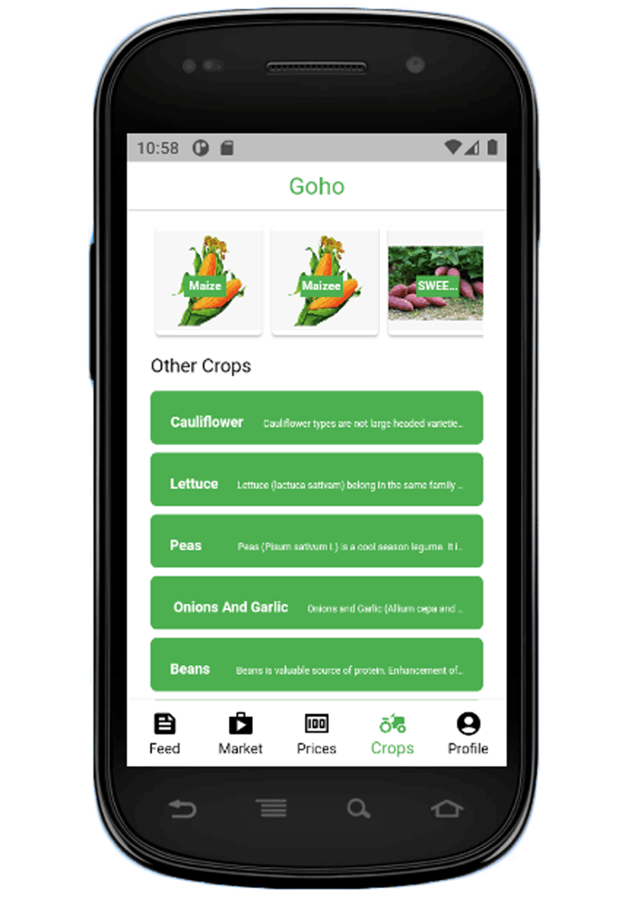
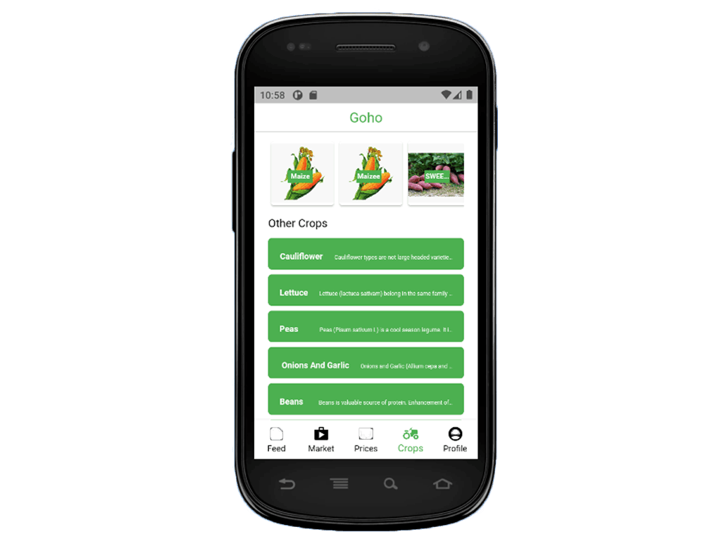

GPS Field Measurement
Walk around a field to capture boundary points and Goho calculates the area and perimeter automatically — useful for estimating seed, fertiliser, labour, fencing, and quotations. Works offline.
Goho is a smart farming platform that combines GPS field measurement, satellite crop monitoring, and on-device AI plant disease diagnosis with practical farming knowledge — working even in areas with limited internet, all from your smartphone.
Download the current Android APK to measure fields with GPS, monitor crop health with satellite NDVI, diagnose plant diseases with on-device AI, and access crop, market, and weather information from Goho.
This is a direct Android APK download. Your phone may ask you to allow installation from your browser before it installs.

Goho, a Shona word meaning harvest, was created to reduce the information gap faced by farmers in Zimbabwe. It has grown from a farming information app into a precision agriculture platform that brings GPS field measurement, satellite crop monitoring, and on-device AI disease diagnosis together with practical farming knowledge — built to keep working in low-connectivity areas.
Goho now combines precision agriculture tools with practical farming information — everything below is built into the current app.
Walk around a field to capture boundary points and Goho calculates the area and perimeter automatically — useful for estimating seed, fertiliser, labour, fencing, and quotations. Works offline.
Goho uses satellite imagery to analyse crop health through NDVI, helping farmers spot healthy vegetation, detect stressed areas early, and make timely irrigation and fertiliser decisions.
Photograph a crop leaf and Goho's on-device AI model identifies diseases across maize, tomatoes, potatoes, peppers, and beans — with a confidence score and no internet required.
Farmers can read simple crop health and production information, including planting guidance, common crop problems, pest awareness, and crop care.
Farmers can check market information to better understand selling conditions before taking produce to buyers or local markets.
Weather information helps farmers plan planting, irrigation, spraying, and harvesting with better awareness of changing conditions.
Goho is designed for people who need clear agricultural information, especially those who may not have easy access to extension support, market knowledge, or farming experience.
Crop Doctor now pairs an on-device AI disease diagnosis model with practical crop production and crop health content, helping farmers identify problems early and make better planting and crop care decisions.

Goho's next stage is focused on turning farming information into stronger production records, market readiness, and partner visibility.
Estimating expected output from field size, crop type, and crop health data to support planning and quotations.
Input guidance based on measured field area, crop type, and observed crop health from NDVI and AI diagnosis.
Early warnings and farm records that build on AI disease diagnosis to help farmers act before problems spread.
Building the foundation for future sourcing, compliance, export readiness, and smallholder impact tracking.
Goho's long-term goal is to help farmers, buyers, exporters, NGOs, and development partners work with clearer information and stronger farmer support.
Better access to information for everyday farming decisions.
Future tools for sourcing visibility and production planning.
Digital support for farmer programs and smallholder development.
More inclusive pathways for youth, women, and new growers.
We are working with farmers, communities, buyers, NGOs, and development partners to improve access to farming knowledge, market information, and future digital agriculture tools in Zimbabwe.